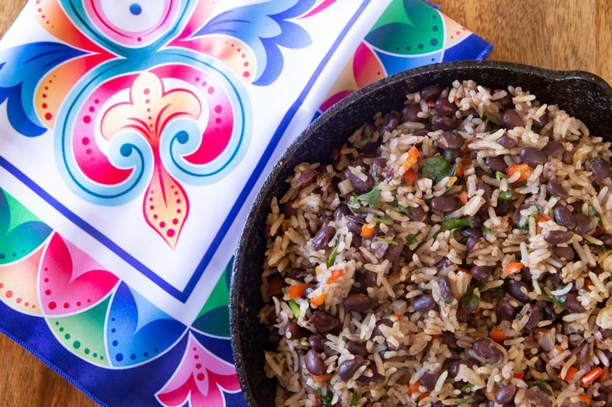

Gallo Pinto

Ingredients
- 360 grams cooked day-old white rice
- 300 grams cooked day-old black or red beans (or 1 can)
- 360 milliliters bean broth or water
- 75 grams yellow onion (roughly 1/2 medium onion, chopped)
- 75 grams red pepper (roughly 1/2 medium pepper, chopped)
- 10 grams chopped cilantro
- 30 milliliters Salsa Lizano
- Sea salt to taste
- Vegetable oil or olive oil
Instructions
- Heat oil in a large skillet over medium heat.
- Add onion, pepper, and salt.
- Lightly cook until the onion is translucent.
- Then add the beans with broth and toss with the chopped vegetables and oil.
- Add the rice (cooked) to the skillet.
- And toss until well combined with the beans and spices.
- Add the cilantro and lightly toss.
- Heat thoroughly and add the Salsa Lizano.
- Mix again and then serve- preferably with fried eggs, warm corn tortillas and a hot cup of Costa Rican coffee or agua dulce.
Servings
4-6 servings